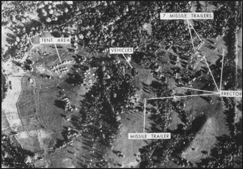
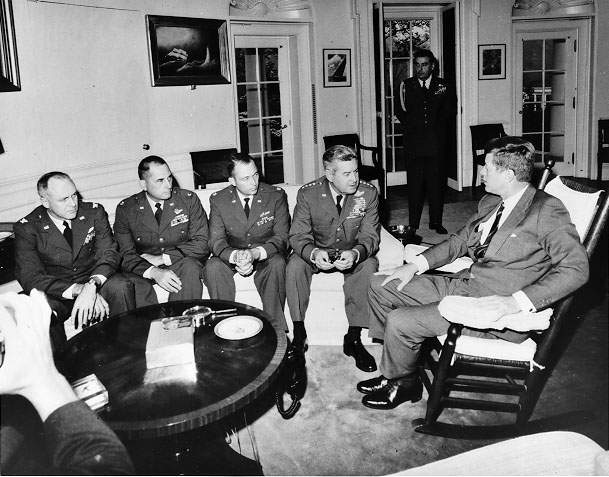

1: Cuban Missile Crisis¶
Letter From Chairman Khrushchev to President Kennedy, October 26, 1962:
"Mr. President, we and you ought not now to pull on the ends of the rope in
which you have tied the knot of war, because the more the two of us pull, the
tighter that knot will be tied. And a moment may come when that knot will be
tied so tight that even he who tied it will not have the strength to untie it,
and then it will be necessary to cut that knot, and what that would mean is not
for me to explain to you, because you yourself understand perfectly of what
terrible forces our countries dispose.
Consequently, if there is no intention to tighten that knot and thereby to doom
the world to the catastrophe of thermonuclear war, then let us not only relax
the forces pulling on the ends of the rope, let us take measures to untie that
knot. We are ready for this."
Synopsis¶
In October 1962, an American U-2 spy plane secretly photographed nuclear missile sites being built by the Soviet Union on Cuba.
On October 22, 1962 U.S. President John F. Kennedy announced to the world that the Soviets were building secret missile bases just 90 miles off the east coast, on Cuba.
The option of an armed invasion on Cuba with airstrikes was on the table, but ultimately Kennedy decided to be more cautious.
He demanded that Russian Premiere Nikita S. Khrushchev abort his mission in cuba. To enfore this, he put in place an American naval blockade.
We went on the brink of nuclear warfare when Nikita authorized his field commanders to fire their tactical nuclear weapons of attacked by the Ame ricans.
As many have put it “the two leaders of the world’s greatest nuclear superpowers stared each other down for seven days - until Khrushchev blinked.”
What effects did it have?¶
This teeter totter between peace and nuclear warfare shocked the world.
It stirred an already existing global debate about the U.S. and Soviet Unions’ use of nuclear weapons.
It also caused even more anti-communist sentiment stateside, as well as fear. Even more bomb bunkers were built as people prepared for the worst.
Public fear is evident even during Seattle’s world fair in 1962:
"We cannot see into the future to visualize the Seattle of 2012, but we
can hope and imagine. In the year 2012 Seattle will either be a mighty
metropolis of more than 1,000,000 residents -- or it will have become a
charred, deserted relic of a fearful age of nuclear warfare. This year of
1962 will have been a troubled one as you will have read in history."
- Letter from the Seattle City Council (1962) to the Seattle City Council (2012) in commemoration of the Space Needle's 50th anniversary.
Media¶
An aerial view of the Surface to Air (SAM) launch sites being built by the Soviet Union in Cuba.
US Air Force Chief-of-Staff General Curtis LeMay meeting with President John F. Kennedy along with the U-2 pilots who photographed Soviet missiles on Cuba, sparking the Cuban Missile Crisis, 1962

An artist parodies the cuban missile crisis and the struggle between Soviet Chairman Khrushchev and President Kennedy.